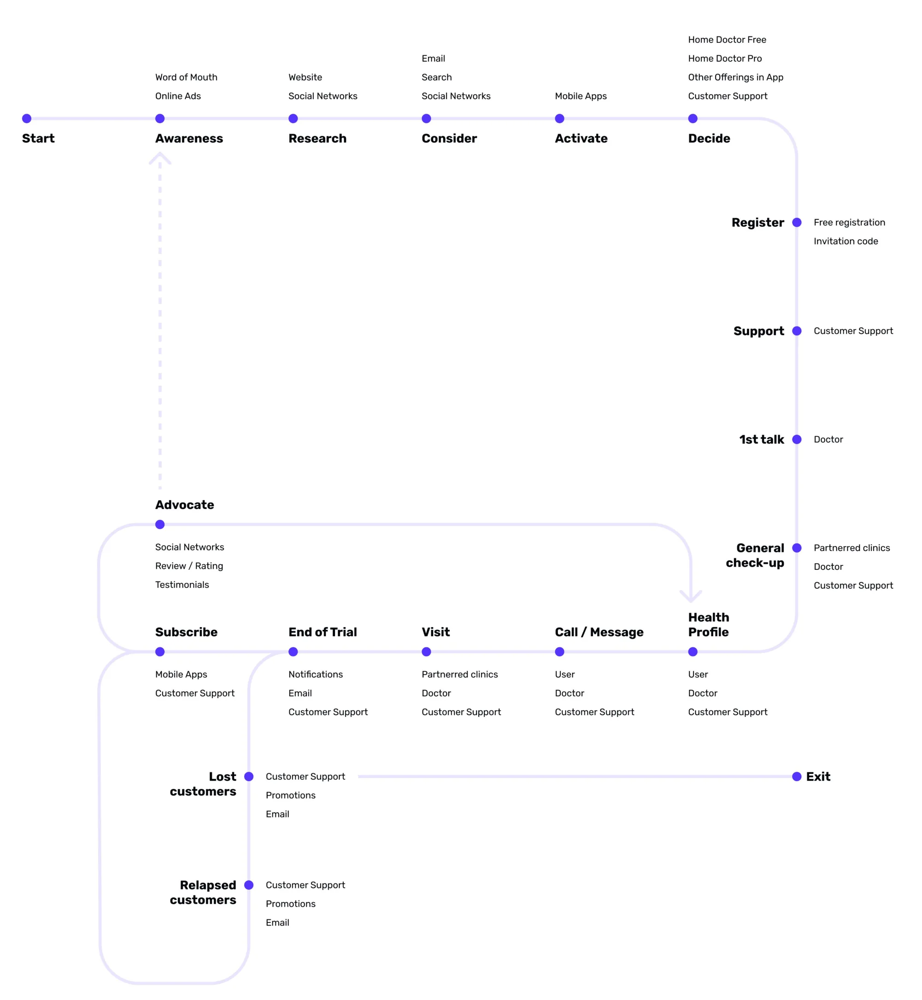
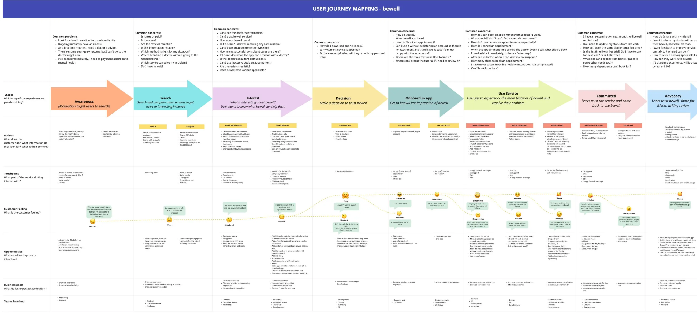
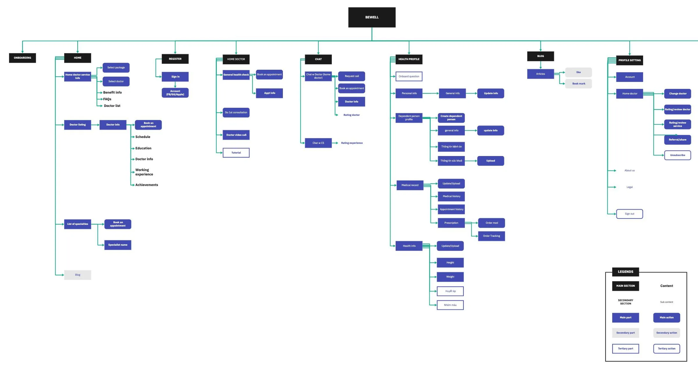
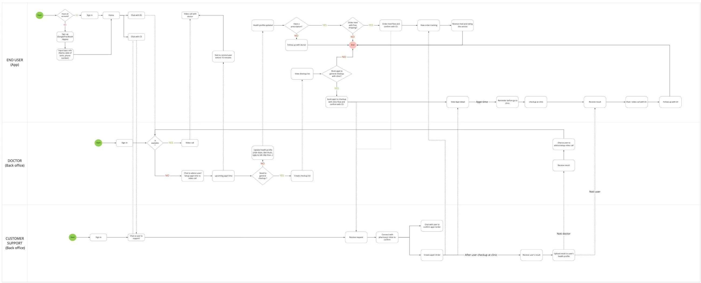
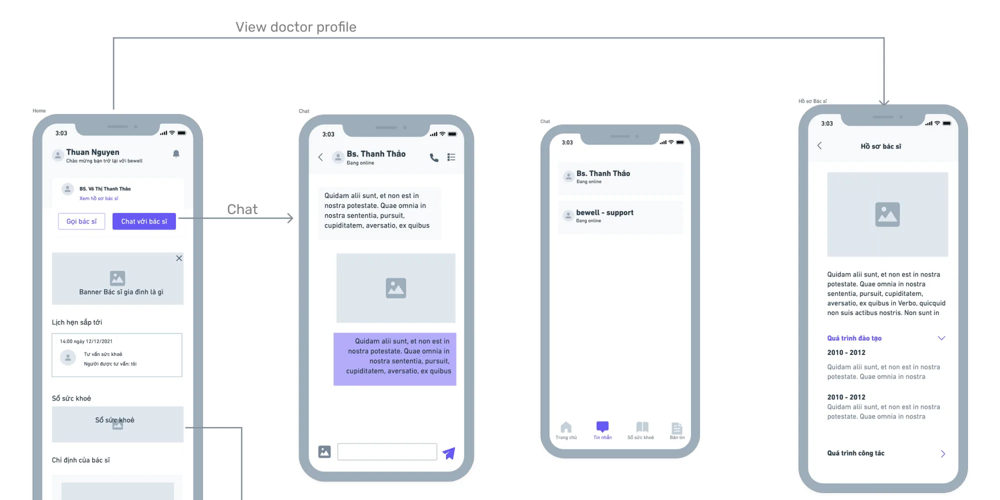
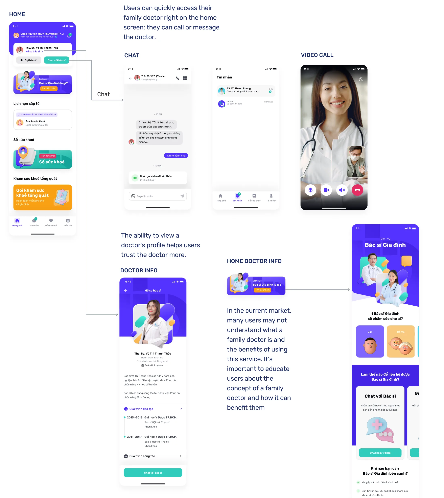
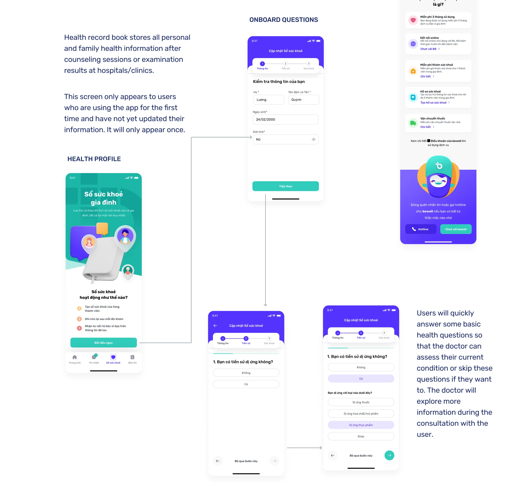
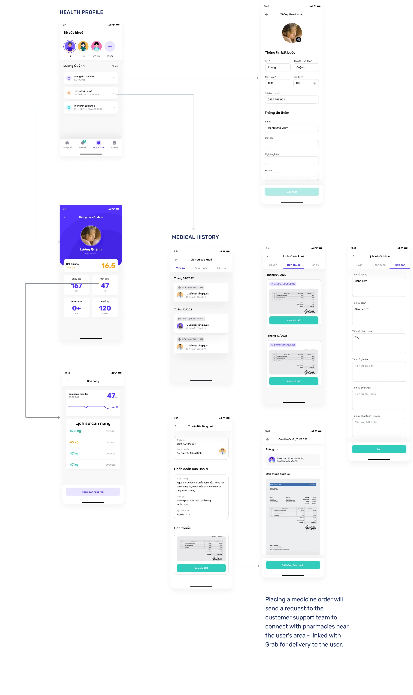
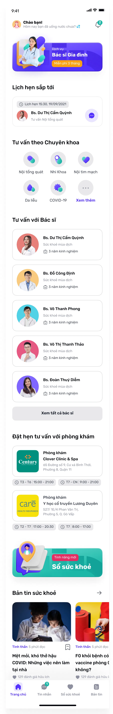

01Context
A pivot in the middle of a pandemic.
Bewell launched in August 2021 to give Vietnamese users health consultations during COVID-19. It passed 1,000 users. But consultation apps were everywhere, and several had far bigger brands.
So the business changed direction. Bewell would become a family doctor for its users: always reminding, monitoring, and understanding the health of every family member. My job was to find out who needed that most, and what it should feel like.
02Research
The real user wasn’t the patient. It was the caregiver.
I ran 20 in-depth online interviews, 45 minutes each. Participants were office workers in Ho Chi Minh City, aged 25 to 35, married with children, on medium to high incomes. We had three goals.
- Understand how people care for their own and their family’s health today, and where it hurts.
- Find needs and opportunities for a family doctor service aimed at caregivers.
- Redefine the persona set around the family doctor direction.
Here is how many of the 20 participants shared each behavior or pain point.
The pattern was clear. The person opening the app is usually a parent caring for children and ageing parents at the same time. They carry the schedules, the records and the worry for everyone.
- “Every time we go to the hospital for a family check-up, I have to keep a lot of records. I hope they can be consolidated so I don’t have to search for them.”
- “My father-in-law needs to take medicine regularly but often forgets. I’m busy at work and sometimes forget to remind him.”
- “I don’t want to take my child to the hospital too often during the pandemic. I’d like a doctor’s advice first, so I can decide.”
The marketing team reviewed three home doctor services in the market. I studied their interfaces and user reviews to see what people praised and what frustrated them.
03Define
Designing for the one who remembers everything.
Key persona25 to 40
Caregiver for kids and elderly parents
Mostly women, working full time in an office. Uses a laptop at work and a phone at home. The primary carer for the whole family, often without time to take elderly parents to appointments. Has a lot to remember for the baby and less experience caring for the elderly. Searches online and asks friends. Balances the family budget, buys services yearly, and likes promotions.
I mapped the service journey as a loop, not a line. A family doctor relationship doesn’t end after one call. It moves through registration, a first talk, check-ups and the health profile, then repeats. It also has clear points where users can lapse or leave.


04Ideate
Many good ideas, five that mattered first.
Brainstorming turned each pain point into solutions. Reminders for medicine, follow-ups and vaccinations. Meal suggestions per profile. Doctor-written articles on handling symptoms. A doctor who is always one tap away. Then we prioritized for the MVP.
Chat and video call with your doctor
The doctor lives on the home screen, so help always feels close.
Chat with customer support
A human for bookings, orders and anything outside medical advice.
Book a general health check-up
Turn online advice into an in-person visit at a partner clinic.
Family health profile
One place for every member’s records, history and prescriptions.
Order medicines
Prescriptions go to support, who connect a nearby pharmacy and Grab delivery.
05Design
One user, one doctor, one support person.
The information architecture had to hold a lot: home, Home Doctor, chat, health profiles for the whole family, articles and account settings. The top level settled on four tabs: Home, Messages, Health record and News.

Three actors, one seamless experience
Behind every user are a doctor and a customer support agent working in the back office. I mapped how all three connect, so the user never feels the handoffs. The business changed package and access decisions several times, so this map became the team’s source of truth as flows evolved.

For the MVP, the wireframes focused on the key features and on simplifying data entry for doctors and support. Users can contact their doctor proactively and see prescriptions after each consultation.

Visual design decisions
I worked with a UI designer on the final screens. Each decision answered something from research.
Home
The doctor is always on the home screen
Call or message your family doctor in one tap. It creates the feeling that the doctor is always there.
Trust
Doctor profiles build confidence
Training and work history help users trust a doctor they’ve never met in person.
Education
Explain what a family doctor is
16 of 20 people had never used online health services. A short explainer shows the value before asking for commitment.
Onboarding
Ask little, allow skipping
A few basic health questions, shown once, all skippable. The doctor learns the rest during the first consultation.



06Test and reflection
Designing while the ground keeps moving.
Late changes to the MVP and UI meant we couldn’t run tests on the final MVP before launch. But we did test the Home Doctor concept against the older app. Users said the new UI was better and easier to use.
During testing, the business first chose to keep specialist and clinic consultations alongside Home Doctor. Later it switched fully to Home Doctor. The design had to absorb both decisions.
What I learned
- Find the real user. The patient wasn’t the customer. The caregiver was. That one shift shaped every screen.
- Design structures that survive change. A clear IA and a shared actor flow let us adapt quickly each time the business changed its mind.
- Lower the cost of starting. In healthcare, skippable onboarding and visible doctors build trust faster than long forms.
